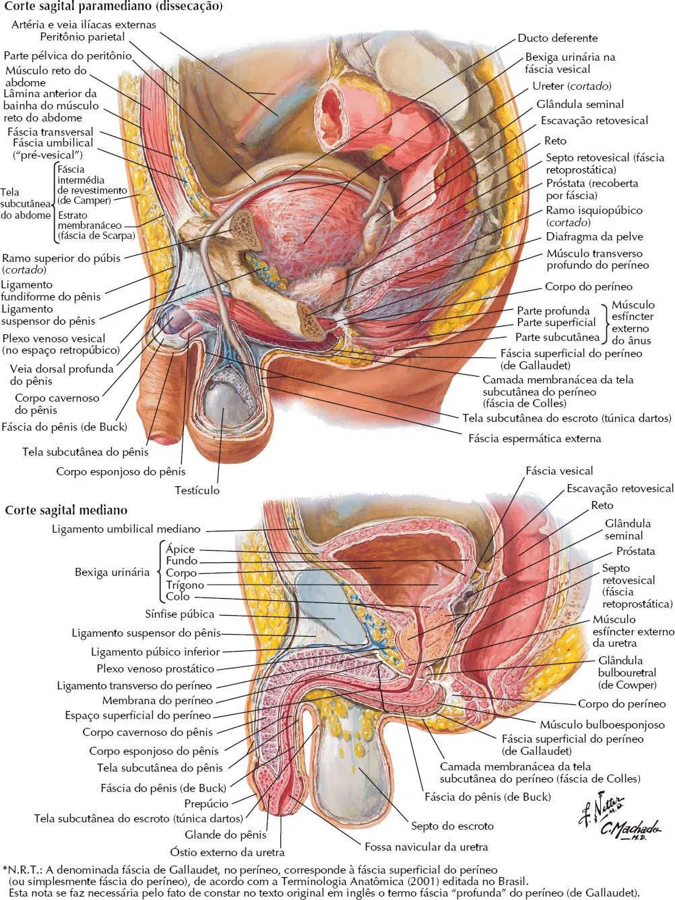
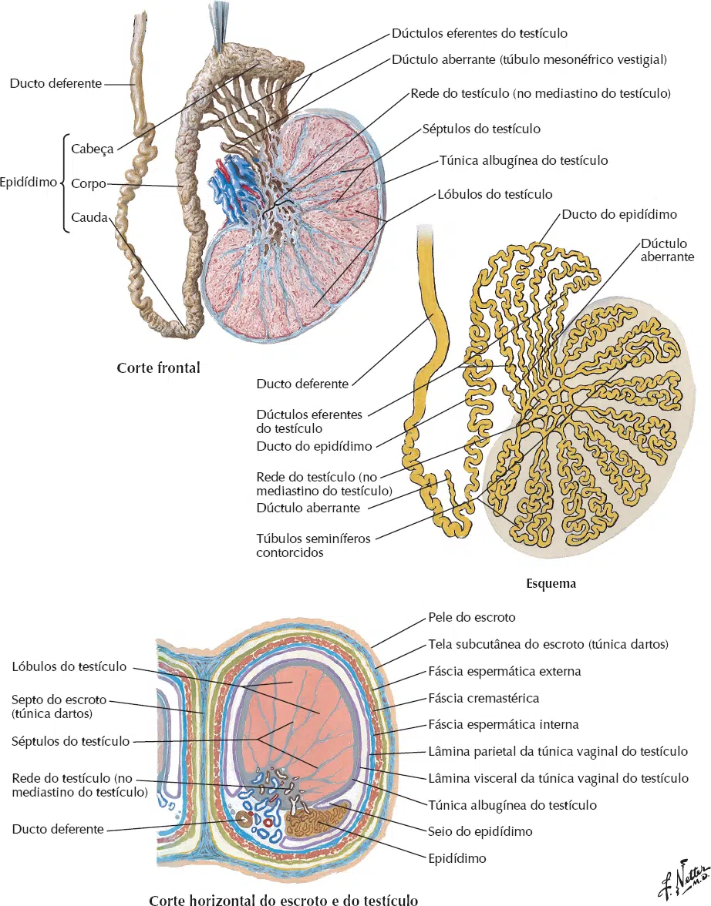
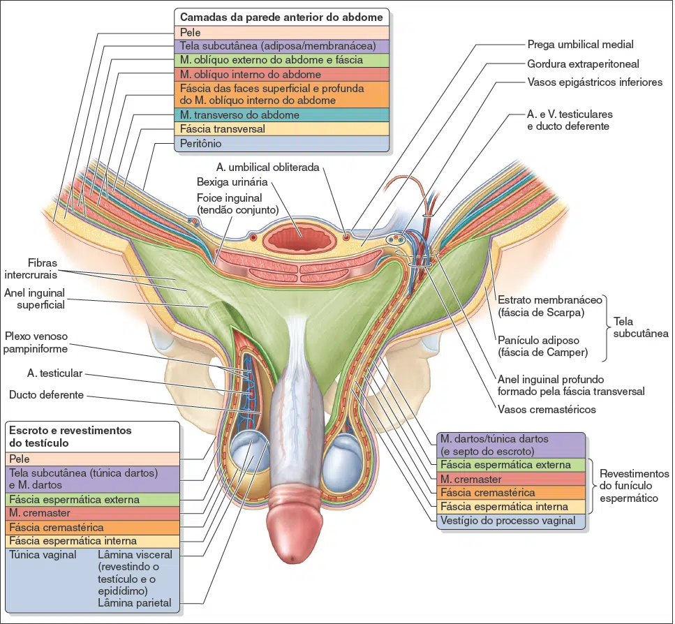
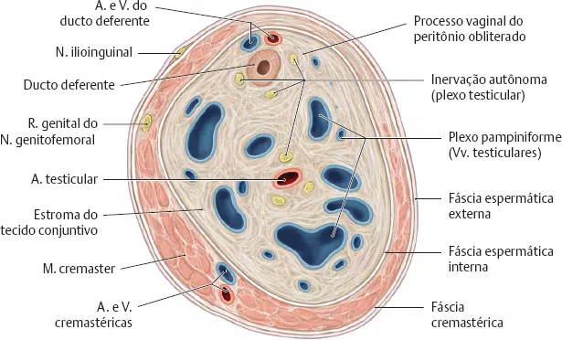
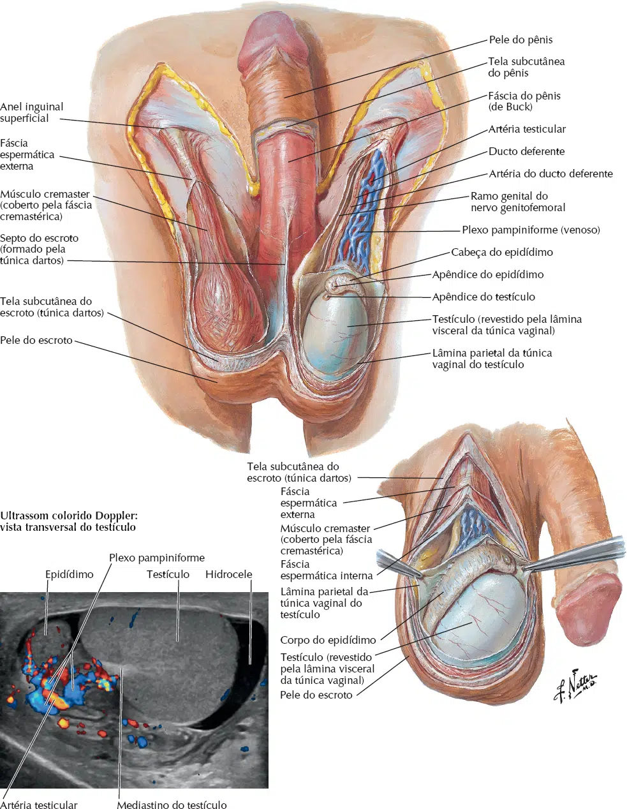
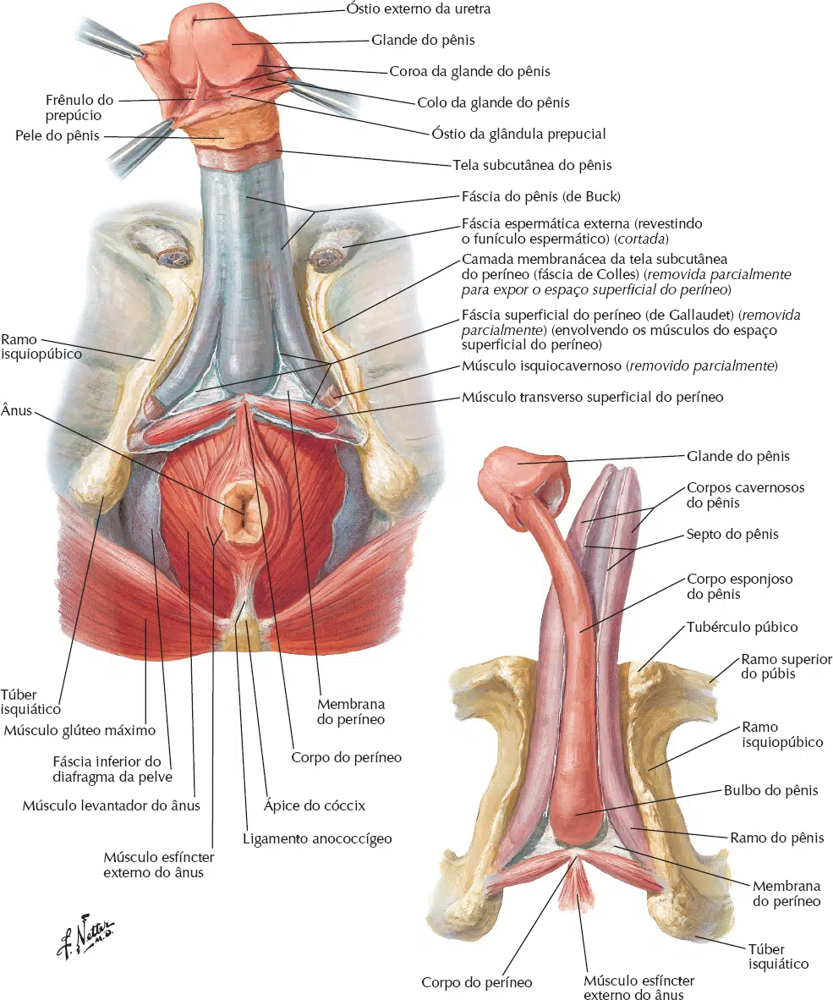
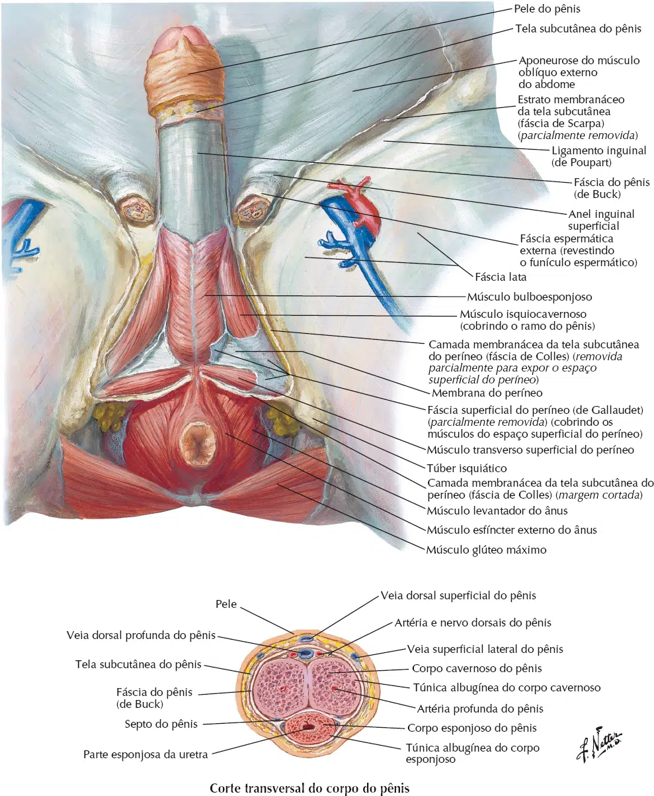

O sistema genital masculino é formado por órgãos, que de uma forma geral, são responsáveis por produzir o gameta, o sêmen, transportar ambas as substâncias e por fim liberá-las ao meio externo através da ejaculação.
Para que isso seja possível, o homem dispõem de vários órgãos para suprir estas funções.
Estes órgãos podem ser divididos em internos e externos, sendo que esta divisão se dá pelo fator embriologia, são eles:
Internos:
Testículos;
Epidídimos;
Ductos deferentes;
Ductos ejaculatórios;
Glândula (Vesícula) seminal;
Próstata;
Glândula bulbouretral;
E parte da uretra.
Externos:
Escroto;
Pênis;
E parte da uretra.

Todas as glândulas pertencem ao sistema endócrino, porém na maioria das vezes suas secreções exócrinas e endócrinas irão atuar em outros sistemas.
Este é o caso das glândulas anexadas ao sistema genital masculino que produzem o sêmen, um líquido que serve para conduzir, proteger e nutrir os espermatozóides.
São elas:
Glândula seminal;
Próstata;
E a bulbouretral.
A glândula seminal localiza-se na parte posterior e inferior da bexiga; quando o ducto deferente entra na pelve, dirige-se para esta região da bexiga onde se une com o ducto da glândula seminal para formar o ducto ejaculatório, este último penetra na uretra prostática do homem.
A próstata é a maior glândula produtora de sêmem, tem o tamanho aproximado de uma noz e localiza-se em volta da uretra logo abaixo da bexiga.
Esta glândula produz cerca de 60% de todo o sêmem.
A próstata produz também o PSA, um hormônio quantificado num exame de sangue para detectar se houve aumento desta glândula.
A glândula bulbouretral, também conhecida como Glândula de Cowper, é uma glândula situada debaixo da próstata e da (glândula) vesícula seminal.
Responsável pela secreção do fluido pré-ejaculatório que integra em cerca de 5% o fluido seminal (a próstata e as vesículas seminais secretam a maior parte do sêmen e apenas cerca de 10% vem dos testículos, em forma de espermatozóides envolvidos em líquido viscoso).
Esse fluido viscoso facilita a relação sexual, devido ao caráter lubrificante que apresenta.
Do grego (orquis), os testículos são as gônadas masculinas, produzem o espermatozóide (processo que dura 63 dias aproximadamente) e também o hormônio testosterona.
Estes órgãos se desenvolvem na cavidade abdominal e migram sentido pelve ao longo de toda a gestação, por volta do 8º mês os testículos já se encontram no canal inguinal e posteriormente no escroto.
A necessidade da “saída” deste órgão para localizar-se fora da cavidade corpórea é explicada uma vez que o testículo necessita de uma temperatura entre 35 e 36 ºC.
Na parte superior do testículo situa-se um órgão em forma de “vírgula” chamado epidídimo; todo espermatozóide produzido pelos testículos é levado ao epidídimo onde ocorre uma maturação e uma seleção destes gametas.
O epidídimo é formado por uma cabeça, um corpo e uma cauda.

Como já foi dito anteriormente, os testículos migram da cavidade abdominal até o escroto, porém todas suas estruturas (vascular e nervosa) são formadas junto com o órgão, ou seja, também na cavidade abdominal.
Quando os testículos descem trazem consigo todos esses vasos e nervos para o interior do escroto; todas estas estruturas atravessam também o canal inguinal formando um ‘cordão”que passa do abdome para o escroto chamado funículo espermático.
Ao observarmos o funículo espermático encontramos:
Nervos;
Artérias e veias testiculares;
Linfonodos;
E o ducto deferente.
O ducto deferente é conectado à cauda do epidídimo, e quando este último libera os espermatozóides, é o ducto deferente que conduz os espermatozóides de dentro do escroto até o interior da pelve, onde este órgão desemboca na uretra.
A popular vasectomia (ou deferentectomia) é o fechamento cirúrgico deste ducto.


Escroto significa bolsa, uma bolsa que sustenta e protege os testículos.
Formado principalmente por pele e músculo liso, o escroto vai além apenas de abrigar os testículos, sua função envolve também a termorregulação dos testículos, ou seja, quando o meio externo esta muito frio o músculo liso do escroto contrai aproximando os testículos do corpo para que estes fiquem aquecidos; ao contrário ocorre em dias quentes, quando o escroto relaxa a musculatura para que os testículos se afastem do corpo e não superaqueçam.
O escroto então é fundamental para manter aquela temperatura adequada nos testículos para a espermatogênese.
A alta temperatura nos testículos é prejudicial tanto para a produção do espermatozóide e também para o próprio órgão.

É o órgão masculino da cópula e a saída comum para a urina e o sêmem.
No plano frontal em que os corpos cavernosos terminam anteriormente, o corpo esponjoso apresenta uma dilatação cônica, cujo nome é descentrado, isto é, o centro do mesmo não corresponde ao grande eixo do corpo esponjoso; dilatação essa denominada glande.
O rebordo que contorna a base da glande recebe o nome de coroa da glande.
No ápice da glande encontramos um orifício, que é o óstio externo da uretra.
Nesse óstio vem se abrir a uretra esponjosa, que percorre longitudinalmente o centro do corpo esponjoso, desde a face superior do bulbo do pênis, onde a mesma penetra.
Na união da glande com o restante do corpo do pênis, forma-se um estrangulamento denominado colo.
O pênis, portanto, pode ser subdividido em:
Raiz;
Corpo;
e Glande.

É composto de três corpos cilíndricos:
Corpos cavernosos – São dois, estes corpos formam a maior parte do dorso do pênis, tem composição muscular lisa e uma grande capacidade de distensão.
Os corpos cavernosos são aqueles que se enchem de sangue durante a ereção do pênis e fazem com que este órgão cresça e fique rígido para ser possível assim a cópula.
Algumas artérias denominadas de profundas penetram estes corpos cavernosos para levar até o pênis o sangue.
Os corpos cavernosos são contidos por uma membrana fibrosa esbranquiçada que leva o nome de túnica albugínea, esta contenção é importante para evitar que os corpos cavernosos ao se encherem de sangue se dilatem e deformem o pênis na ereção.
Corpo esponjoso – esta parte do pênis também se enche de sangue na ereção, porém sua função é de abrigar a parte esponjosa da uretra.
O corpo esponjoso possui uma dilatação proximal que forma o bulbo do pênis, e uma dilatação distal formando sua glande.
O pênis tem ainda um dorso (sua parte superior) e uma raiz, que é o parte do pênis que se encontra no interior do corpo.
